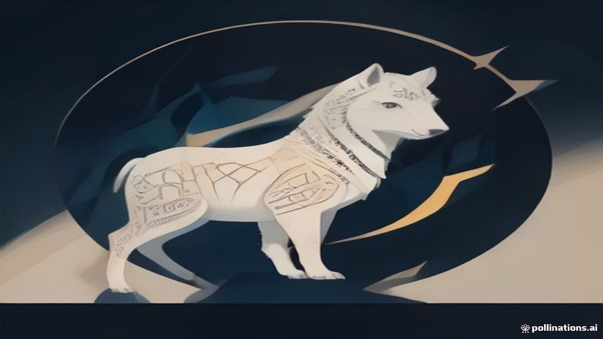
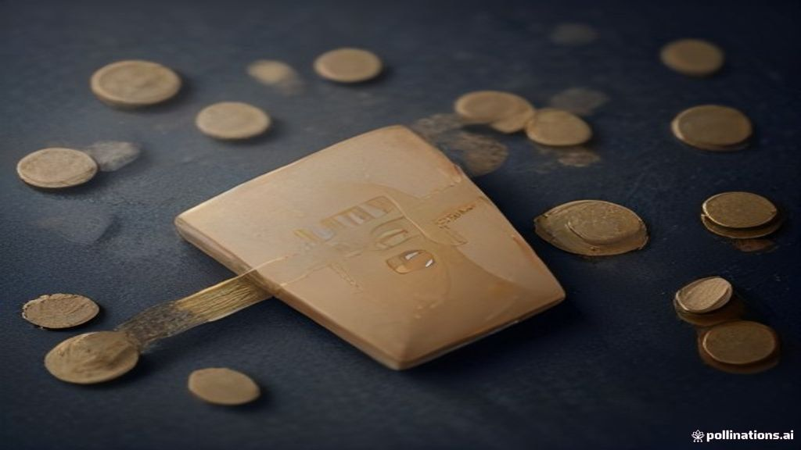

Latest insights
Personal-finance explainers, market briefs, F&O positioning and business stories — all in one place.
Emerging Markets Face Headwinds: Capital Outflows Explained
Developed markets are tightening monetary policy, making their assets more attractive to global investors. This shift in capital is causing funds to flow out .
NRI Property Sale in India: Understanding Different TDS Rules
When a Non-Resident Indian (NRI) sells property in India, the buyer must deduct Tax Deducted at Source (TDS) at specific rates. These TDS rates for NRIs are s.
EPFO Confirms Your EPF Interest Rate for FY 2025-26: What It Means for Your Savings
The Employees' Provident Fund Organisation (EPFO) has confirmed the 8.25% interest rate for your EPF account for the financial year 2025-26. This rate ensures.
Kuku Technologies IPO: What SEBI's Nod Means for Investors
Kuku Technologies has received approval from SEBI to launch its Initial Public Offering (IPO). The company previously filed its confidential draft IPO papers .
Unlimited Health Insurance: What to Check Before You Buy
The term 'unlimited health insurance' often refers to high sum insured plans, not truly limitless coverage. Policy exclusions define specific conditions or tr.
Analysing Market Trends: Implications for HDFC Bank, Adani Ports, JSW Steel
Indian benchmark indices exhibited mixed performance, with Sensex slightly down and Nifty showing a modest gain. A notable factor influencing current market s.
Your Share Trades Just Got Faster: Understanding the T+1 Settlement Cycle
When you buy or sell shares, the actual exchange of shares and money isn't instant; it happens later, in a process called settlement. India's stock market now.
Investing via RBI Retail Direct: Understanding UPI MDR Changes
The Reserve Bank of India's Retail Direct platform allows individuals to directly invest in government securities (G-Secs) using UPI. Merchant Discount Rate (.
Gold vs Nifty 50: Post-Tax Returns on ₹1 Lakh Over 20 Years
Over the last two decades, physical gold and Nifty 50 have shown different growth trajectories. Gold's returns are subject to Long Term Capital Gains (LTCG) t.
No Internet? No Problem! RBI Governor Shaktikanta Das Boosts Offline Digital Payments
RBI Governor Shaktikanta Das recently announced expanded rules for offline digital payments. This means you can now make small payments up to ₹500 even withou.
Fed Meeting: Rate Hike, Dot Plot, and Market Impact Explained
The US Federal Reserve (Fed) recently increased its benchmark interest rate to combat persistent inflation. The updated 'dot plot' indicates Fed officials ant.
EPFO Form 10C: Claiming Pension Benefits Explained
EPFO Form 10C is used to withdraw your Employees' Pension Scheme (EPS) contributions or to obtain a Scheme Certificate. You can apply for a Scheme Certificate.
Market Wrap — 18 September 2026
Indian equities closed higher today, with Nifty 50 and Bank Nifty posting modest gains. Midcap and Smallcap indices significantly outperformed, indicating bro.
Pre-Market Brief — 18 September 2026
US markets closed significantly higher, while Asian markets are mostly positive this morning, setting a generally firm global tone. GIFT Nifty is indicating a.
Stock Returns vs. Earnings: Why Profit Growth Isn't Always Enough
Strong profit growth in a company does not automatically guarantee good returns for its shareholders. Stock returns are influenced by both earnings growth and.
India F&O Pulse — 18 Sep 2026: what the day's options & futures positioning is whispering
End-of-day reading of India's F&O open interest, PCR, max pain and FII positioning — explained simply.

How India's ONDC is Changing the Way You Shop Online
ONDC is a government initiative to make online shopping fair and open for everyone. It's not a single app, but a network that connects different buyer and sel.
US Fed Rate Hike: Impact on Indian Banking & Bank Stocks
The US Federal Reserve's recent rate hike, as decided by the FOMC, often signals a shift in global monetary policy. Higher interest rates in the US can lead t.
Understanding New UPI Rules: Impact on Insurance, SIPs, and AutoPay
New UPI rules effective October 15 introduce an interchange fee of 0.4% for merchant transactions exceeding ₹2,000. This fee is primarily levied on Payment Sy.
Market Wrap — 17 September 2026
Indian equities witnessed a mixed session, with the Nifty 50 closing marginally higher while Bank Nifty dipped. Global cues, particularly the US Federal Reser.

Pre-Market Brief — 17 September 2026
Global markets presented a mixed picture, with US indices mostly lower following the Fed's rate hike, while European and Japanese markets saw some gains. GIFT.
India F&O Pulse — 17 Sep 2026: what the day's options & futures positioning is whispering
End-of-day reading of India's F&O open interest, PCR, max pain and FII positioning — explained simply.
Your UPI Payments Just Got a Small Update: What the New Rules Mean
Sending money to friends or family (Person-to-Person or P2P) via UPI remains completely free, no matter the amount. When you pay a shop or business (Person-to.
India Bond Yields Above 7%: A Sweet Spot for 3-5 Year Debt Funds
Indian bond yields have risen above 7%, making debt investments potentially more attractive. This higher yield environment particularly benefits debt funds in.
Mutual Fund Tax: How Portfolio Mix Changes Your Capital Gains Bill
The capital gains tax on your mutual fund investments depends on the fund's underlying portfolio, not just its category. Funds holding over 65% in Indian equi.
Market Wrap — 16 September 2026
Indian equities witnessed a positive session, with Nifty 50 and Bank Nifty closing in the green, driven by banking and heavyweight stocks. The primary catalys.
Pre-Market Brief — 16 September 2026
Global markets presented a mixed picture overnight, with US indices closing lower while most Asian markets traded in the green this morning. GIFT Nifty is sig.
India's Shifting Wealth Pyramid: What FY31 Could Bring
India is experiencing a rapid transformation in its household income distribution. Millions of families are steadily moving into higher income brackets, boost.
India F&O Pulse — 16 Sep 2026: what the day's options & futures positioning is whispering
End-of-day reading of India's F&O open interest, PCR, max pain and FII positioning — explained simply.
Economics explained
The Index of Industrial Production (IIP) measures how much India's factories, mines, and power plants are producing. It's like a monthly report card for the c.

Gold Returns and Inflation: Estimating Your Real Wealth Growth
Gold has shown strong nominal returns in recent years, but it's crucial to understand the impact of inflation on these gains. Nominal returns represent the ra.
FAST-DS 2026: Disclosing Overseas Crypto Assets
The Foreign Assets Disclosure Scheme (FAST-DS) 2026 offers a window for eligible taxpayers to voluntarily disclose undisclosed foreign assets and income. Whet.
Market Wrap — 15 September 2026
Indian markets witnessed a broad-based sell-off today, with benchmark indices closing significantly lower. Rising US Treasury yields and strengthening expecta.

Pre-Market Brief — 15 September 2026
Global markets closed mostly lower, with US and European indices seeing declines, indicating a cautious global tone. GIFT Nifty is signalling a significant ga.
NSE IPO Valuation: Why FY26 Earnings Discount Can Be Misleading
The National Stock Exchange (NSE) IPO's proposed price band of ₹1,700-₹1,785 might appear attractive due to a perceived valuation discount compared to BSE. Th.
India F&O Pulse — 15 Sep 2026: what the day's options & futures positioning is whispering
End-of-day reading of India's F&O open interest, PCR, max pain and FII positioning — explained simply.
Don't Miss Your ITR Deadline if Your Accounts Need an Audit!
The deadline to file your Income Tax Return (ITR) for Financial Year 2025-26 (Assessment Year 2026-27) is **September 30, 2026**, if your accounts need to be .
IPO Report Card: 30 to 60 Days After Listing — September 2026
Out of 31 IPOs that listed between 30 and 60 days ago, 22 are currently trading above their original IPO price. 9 companies are currently trading below their .
Protecting Your Security Deposit: Understanding Tenant Rights in India
A security deposit is legally the tenant's property, held in trust by the landlord, and cannot be arbitrarily deducted. The Model Tenancy Act, 2021, caps resi.
Optimise NPS for Higher Returns & a Bigger Retirement Corpus
The National Pension System (NPS) is a long-term retirement savings scheme offering market-linked returns and significant tax benefits. Optimising your NPS in.
Market Wrap — 14 September 2026
Indian equities witnessed a mixed session, with Nifty 50 and broader markets closing in the red, while Bank Nifty showed resilience. Global cues, particularly.

Pre-Market Brief — 14 September 2026
Global markets presented a mixed picture, with US indices closing higher but Asian peers showing varied performance, including a dip in Japan. GIFT Nifty is i.
Upcoming IPOs, Explained Simply — September 2026
Veegaland Developers and Manika Plastech IPOs are currently open for bidding. Jindal Supreme, SS Retail, Hero Motors, and Sonaselection India IPOs are set to .
India F&O Pulse — 14 Sep 2026: what the day's options & futures positioning is whispering
End-of-day reading of India's F&O open interest, PCR, max pain and FII positioning — explained simply.
What is Margin Trading Facility (MTF) and Why is SEBI Reviewing It?
The Margin Trading Facility (MTF) lets you buy more shares than your available cash by borrowing funds from your stockbroker. You pay a portion of the total s.

Hybrid Home Loans: Balancing Rate Certainty and Cost
Hybrid home loans offer a mix of fixed and floating interest rates, typically starting with a fixed period. This structure provides borrowers with predictable.

PPF: Building a Child's Corpus with ₹1.5 Lakh Annual Contributions
The Public Provident Fund (PPF) is a popular, tax-efficient savings scheme for long-term goals in India. Contributing the maximum ₹1.5 lakh annually to a PPF .
Your Online Investment Advice Just Got Safer: SEBI Cracks Down on Unregulated 'Finfluencers'
SEBI Chairman Tuhin Kanta Pandey recently announced new guidelines to protect investors from misleading financial advice online. These rules target 'finfluenc.